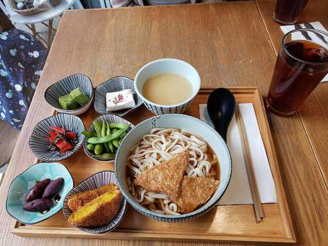
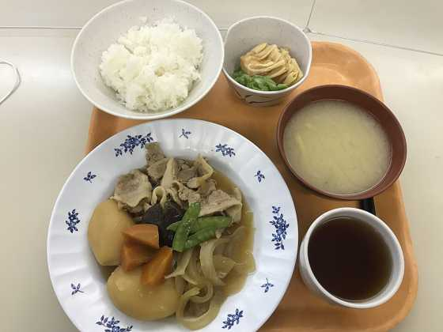
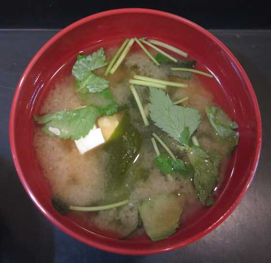
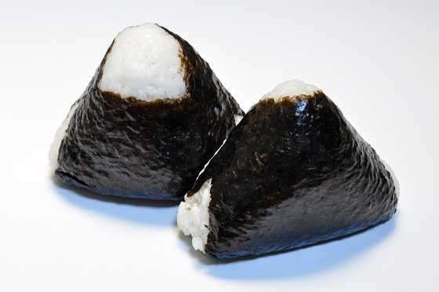
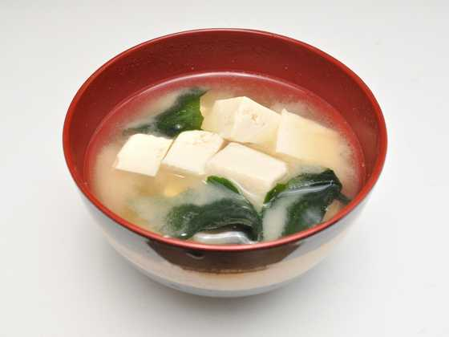
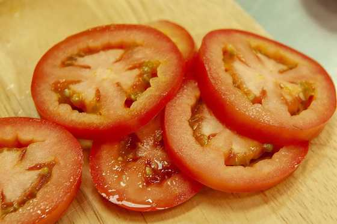
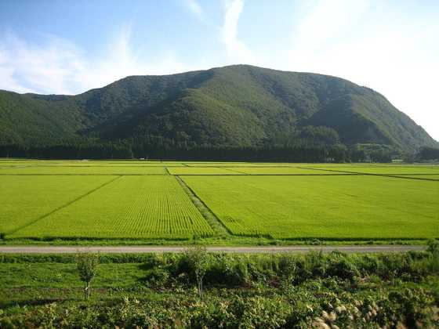
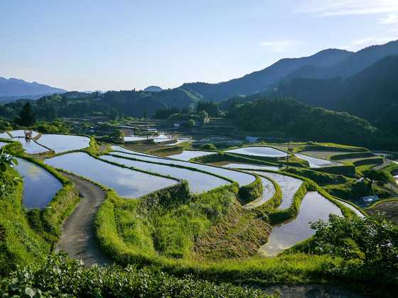

煮込みハンバーグランチ開店日の献立
手作りの小鉢が付くランチです。ごはんは「ファーム雪岡」のミルキークイーンを使っていると紹介されています。
ランチのみの営業です。報道記事で紹介されている2つのランチを中心にご案内します。写真はイメージです。

手作りの小鉢が付くランチです。ごはんは「ファーム雪岡」のミルキークイーンを使っていると紹介されています。

骨付きの唐揚げを主役にしたランチです。和食も洋食も楽しめるお店として紹介されています。
営業情報は開店時の報道記事に基づく内容です。変更の可能性があるため、最新情報はInstagramをご確認ください。







以下は制作側が作成したイメージ例であり、実在のお客様の声ではありません。
お昼どきにふらりと立ち寄れる気軽さがうれしい。ごはんがつやつやで、おかわりしたくなりました。
30代・ご近所の方(イメージ)小鉢が手作りで、ほっとする味。住宅街の中の食堂という雰囲気が心地よかったです。
40代・お昼休みに(イメージ)骨付き唐揚げを目当てに来ました。ボリュームがあって、また来たいと思います。
20代・友人と(イメージ)
みゆキッチンは、近鉄名張駅の東、鴻之台の住宅街にあるランチ食堂です。2026年5月2日に開店したと報じられています。
「みゆキッチン」という店名の由来やオーナーの想いは、確認できた情報がないため掲載していません。ごはん・小鉢を中心とした家庭的な食堂というイメージで、制作側が色合い・文章を考えたサンプルです。

写真について このページの写真はフリー素材(クリエイティブ・コモンズ等)のイメージで、店舗の実際の様子ではありません。縮小・切り抜きなどの加工をしています。名張市で撮影された写真ではありません。ライセンスの内容は creativecommons.org でご確認いただけます。